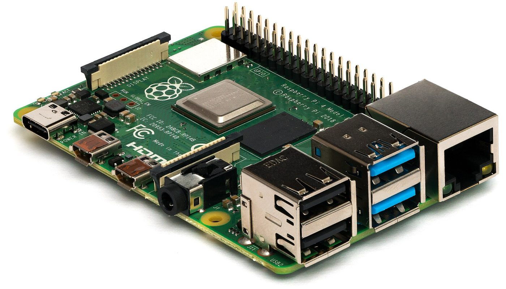
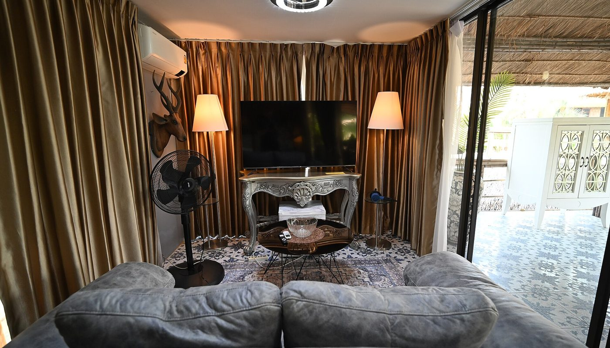

Logiciel libre · aucun lien affilié sur cette page · prix relevés le 2 oct. 2026
Serveur multimédia maison : Jellyfin, sans abonnement ni télémétrie — les prix réels et les pièges

Beaucoup de gens paient un abonnement à un serveur multimédia pour lire les films qu'ils possèdent déjà. Jellyfin fait la même chose en logiciel libre, sans palier payant, sans télémétrie et sans serveurs centraux : le catalogue que vous lisez est le vôtre. Reste à savoir sur quelle machine le faire tourner — et là, les prix des mini-PC relevés le 2 octobre 2026 vont de 199 € à 349 €.
Aucun lien affilié sur cette page — voir comment ça marche Prix lus le 2 oct. 2026 Licence libre GPL-2.0
En bref
- Le logiciel est gratuit. Jellyfin est publié sous licence libre GPL-2.0 : ni abonnement, ni palier premium, ni télémétrie obligatoire. C'est la différence avec Plex (Plex Pass) et Emby (Emby Premiere), qui gardent des fonctions derrière une offre payante.
- La machine coûte entre 199 € et 349 € selon les mini-PC Intel N100 relevés le 2 oct. 2026 (barebone à 199 € chez un revendeur informatique français ; Beelink MINI-S12 Pro 16 Go/512 Go à 235,95 € et 349 €).
- Ce que Jellyfin fait : diffuser films, séries, musique, photos et TV en direct depuis votre médiathèque vers téléphones, TV et navigateurs, sur votre réseau et à distance.
- Ce qu'il ne fait pas : il n'apporte aucun catalogue de contenus. Si vous n'avez pas les fichiers, Jellyfin n'a rien à lire. Ce n'est pas un « Netflix gratuit ».
- Ce qui décide du budget final : le stockage (disques, sauvegarde) et la puissance de transcodage — deux postes que nous n'avons pas chiffrés et qui n'apparaissent donc dans aucun total ici.
Un serveur multimédia, ce n'est pas un abonnement de plus
Un serveur multimédia ne fait qu'une chose : il prend des fichiers vidéo et audio que vous possédez et les re-sert proprement vers vos appareils — avec jaquettes, résumés, reprise de lecture. Le « serveur » est donc un petit ordinateur chez vous, et le « client » est votre téléphone, votre TV ou votre navigateur.
La question n'est pas « quel logiciel », mais « combien je paie pour lire mes propres fichiers ». Les trois grandes familles se distinguent presque uniquement là-dessus :
Plex — gratuit à l'entrée, mais Plex Pass pour certaines fonctions.
Emby — gratuit à l'entrée, mais Emby Premiere pour certaines fonctions. Comparaison des modèles de financement de chacun des trois projets, constatés sur leurs propres pages le 1er–2 octobre 2026. Les trois lisent votre médiathèque ; seuls Plex et Emby appliquent un palier payant.
Autrement dit : Jellyfin ne « remplace » Plex que si ce que vous appréciez chez Plex est le streaming de vos fichiers. Il ne remplace ni Netflix, ni Disney+, ni Prime Video — il n'apporte aucun contenu. C'est le point que les tutoriels enthousiastes oublient de dire clairement.
Les prix : ce qui est lu, où, et quand
Les montants ci-dessous concernent la machine qui fait tourner Jellyfin. Nous avons pris le cas le plus courant — un mini-PC Intel N100, le format recommandé pour un serveur discret et sobre en énergie — et nous avons relevé les prix le 2 octobre 2026 chez trois vendeurs.
Mini-PC pour serveur Jellyfin (€ TTC, relevés le 2 oct. 2026)
Barres proportionnelles aux montants ci-dessus, base à zéro. Prix TTC affichés, relevés le 2 octobre 2026 par notre veille commerce. Ils n'incluent ni le stockage (disques) ni une éventuelle remise : le prix d'un mini-PC bouge souvent d'une semaine à l'autre, c'est pourquoi nous le datons.
| Où | Quoi | Prix relevé le 2 oct. 2026 | Ce que le prix ne comprend pas |
|---|---|---|---|
| Revendeur informatique français (LDLC) | Barebone mini-PC Intel N100 (catégorie N-series), sans mémoire ni disque | dès 199,00 € TTC | RAM, SSD, système — à ajouter soi-même |
| powerplanetonline.com | Beelink Mini S12 Pro — 16 Go RAM / 512 Go SSD (promo annoncée −26 %) | 235,95 € TTC (livraison dès 9,86 €, garantie 3 ans) | le stockage de masse (disques externes), la sauvegarde |
| Amazon.fr | Beelink MINI-S12 Pro — listing « Amazon's Choice », 610 avis (4,5/5) | 349,00 € | idem |
La lecture honnête de ce tableau : un même mini-PC peut coûter 235,95 € chez un revendeur et 349 € sur la place de marché le même jour, soit près de 113 € d'écart. Le « Amazon's Choice » ne veut pas dire « au meilleur prix ». Comme toujours, comparez le jour de l'achat — et notez que le barebone le moins cher n'inclut ni mémoire ni disque : son prix réel est plus élevé que les 199 € affichés.
Les quatre pièges que les tutoriels sautent
1. Le transcodage est le vrai poste de dépense
Quand le format du fichier ne correspond pas à ce que l'appareil sait lire, le serveur doit transcoder la vidéo à la volée — c'est-à-dire la convertir en direct, ce qui consomme énormément de CPU. Beaucoup de mini-PC d'entrée de gamme le font mal. La puce graphique intégrée des processeurs Intel récents sait accélérer cette étape, mais tous les modèles N100 ne l'exploitent pas de la même façon. Autrement dit : le critère n'est pas « combien de cœurs », c'est « le transcodage matériel est-il pris en charge ». Vérifiez ce point avant de commander, pas après.
2. « Toujours allumé » a un prix qu'on ne voit pas
Un serveur multimédia tourne en permanence. Un mini-PC Intel N100 consomme peu — c'est justement sa raison d'être — mais ce n'est pas zéro, et surtout : un disque externe qui tourne 24 h/24 s'use. Les tutoriels montrent le montage, pas la facture d'électricité ni la durée de vie des disques. Nous n'avons pas chiffré ces deux postes, donc ils n'apparaissent dans aucun total ici.
3. L'accès à distance est la partie que personne ne montre
Lire ses vidéos chez soi est facile. Les lire depuis l'extérieur est une autre histoire : il faut exposer le serveur de façon sûre, ce qui passe en général par un accès chiffré (tunnel) plutôt que par l'ouverture d'un port. C'est l'étape où beaucoup de débutants renoncent — ou, pire, exposent leur serveur sans protection. La bonne question avant d'acheter le matériel n'est donc pas « quelle puissance », mais « comment je veux y accéder dehors ».

4. « Zéro télémétrie » ne veut pas dire « zéro configuration »
Le discours du logiciel libre insiste sur la vie privée : pas de compte obligatoire, pas de serveurs centraux, pas de suivi. C'est exact, et c'est un vrai argument. Mais cela signifie aussi que vous êtes l'administrateur : mises à jour, sauvegardes, sécurité des accès, réparation si un disque lâche. Ce n'est pas une raison de ne pas le faire — c'est une raison de savoir dans quoi on s'engage.
Trois chemins, selon la machine que vous avez déjà
Aucun de ces trois n'est « le bon » : ils ne répondent pas à la même situation. Le seul achat regrettable est un mini-PC choisi sans avoir vérifié le transcodage matériel et la façon dont vous accéderez au serveur depuis dehors.
La checklist avant d'acheter
- Décidez d'abord comment vous lirez dehors. Réseau local seulement, ou accès distant chiffré ? Cette réponse conditionne la configuration, pas le prix.
- Vérifiez le transcodage matériel de la machine visée, pas seulement sa mémoire ou son nombre de cœurs : c'est lui qui décide si une vidéo passe ou saccade.
- Comptez le stockage à part. Le mini-PC ne suffit pas : vos fichiers vivent sur des disques. Nous n'avons pas chiffré ce poste, il n'est donc dans aucun total ici.
- Prévoyez une sauvegarde. Un disque unique qui lâche, c'est toute la médiathèque perdue — le logiciel ne s'en occupe pas à votre place.
- Comparez le prix le jour de l'achat. Le même mini-PC variait de 235,95 € à 349 € le 2 octobre 2026 selon le vendeur.
- Ne payez pas pour « débloquer » vos propres fichiers. C'est précisément ce que Jellyfin évite : le logiciel est libre et gratuit, le seul coût est le matériel.
Par où commencer, concrètement
Ces liens sont ceux du projet libre et des sources. Aucun n'est affilié : ils sont là pour que vous vérifiiez à la source.
- Le projet : jellyfin.org — téléchargements et documentation officielle.
- Le code : dépôt jellyfin/jellyfin sur GitHub (GPL-2.0).
- Le choix du matériel : la documentation du projet détaille le transcodage matériel — lisez-la avant de commander un mini-PC.
- Comparer les modèles : les prix exacts d'un mini-PC changent chaque semaine ; vérifiez chez plusieurs vendeurs le jour J.
Le réflexe qui évite l'achat inutile : choisir d'abord comment vous accéderez au serveur et ce que vous voulez transcoder, et seulement ensuite comparer les machines.
Questions
Jellyfin est-il vraiment gratuit ?
Oui. Licence libre GPL-2.0, aucun abonnement, aucun palier premium, pas de télémétrie obligatoire. Plex (Plex Pass) et Emby (Emby Premiere) réservent au contraire certaines fonctions à une offre payante.
Quel matériel faut-il ?
Un petit ordinateur toujours allumé. Les mini-PC Intel N100 relevés le 2 octobre 2026 allaient de 199 € à 349 €. Un NAS récent ou un vieux PC peuvent aussi convenir, selon la puissance de transcodage.
Peut-on le regarder hors de chez soi ?
Oui, mais c'est la partie délicate : il faut un accès distant chiffré et assez de débit montant. C'est ce point qui décide du confort en déplacement, pas la puissance brute de la machine.
Est-ce un « Netflix gratuit » ?
Non. Jellyfin ne fournit aucun catalogue : il lit les fichiers que vous possédez déjà. C'est son intérêt (vous ne payez pas pour lire vos propres fichiers) et sa limite (sans fichiers, il n'a rien à lire).
Cette page contient-elle des liens affiliés ?
Non, aucun à ce jour. Des programmes matériel (Amazon Partenaires France, revendeurs de NAS) sont enregistrés chez nous comme candidats — aucun compte créé, aucun lien posé. Si cela change, le lien sera étiqueté et cet encadré daté.
Comment cette page est faite
- Aucun lien affilié ici. Nous avons vérifié les programmes d'affiliation matériel (Amazon Partenaires France, revendeurs de NAS) : ils sont enregistrés chez nous comme candidats — aucun compte créé, aucun lien posé. Si un lien affilié arrive un jour, il sera étiqueté « lien affilié — on est payé si vous souscrivez » avec
rel="sponsored", et cet encadré sera daté. - Les prix sont ceux relevés par notre veille le 2 octobre 2026 chez trois vendeurs, prix TTC affichés. Ils bougent vite — c'est pourquoi chaque montant porte sa date.
- Ce que nous ne savons pas est écrit comme tel : le prix des disques et de la sauvegarde, la consommation électrique, et la commission nette d'un éventuel programme d'affiliation. Rien de tout cela n'apparaît dans un total.
- Les affirmations sur les logiciels (Jellyfin libre GPL-2.0 sans palier payant ; Plex Pass ; Emby Premiere) proviennent de leurs propres pages, lues les 1er–2 octobre 2026.
- Nous ne fabriquons aucun avis, aucun témoignage et aucune statistique. Le chiffre d'audience du projet (étoiles GitHub, commits) est ce que GitHub affiche publiquement, et il est daté.
- Corrections : si un prix a changé ou si nous nous sommes trompés, écrivez-nous, nous corrigeons et nous datons la correction.
Sources
- Dépôt GitHub jellyfin/jellyfin — 57 675 étoiles, 30 090 commits, 5 576 forks, licence GPL-2.0 (consultés via l'API GitHub le 2 octobre 2026).
- Site officiel du projet Jellyfin — modèle de financement (logiciel libre, aucun palier payant, aucune télémétrie imposée) — lu le 2 octobre 2026.
- Pages officielles Plex (Plex Pass) et Emby (Emby Premiere) — existence d'une offre payante — lues les 1er–2 octobre 2026.
- Prix des mini-PC relevés le 2 octobre 2026 : barebone Intel N100 dès 199 € (revendeur informatique français, catégorie N-series) ; Beelink Mini S12 Pro 16 Go / 512 Go à 235,95 € TTC (powerplanetonline.com, livraison dès 9,86 €, promo annoncée −26 %) ; Beelink MINI-S12 Pro à 349 € (Amazon.fr, mention « Amazon's Choice », 610 avis).
- Photos : petit ordinateur à carte unique — Laserlicht, CC BY-SA 4.0 ; téléviseur dans un salon — PattayaPatrol, CC BY-SA 4.0. Toutes deux via Wikimedia Commons.
Avis clients
Avis sur ce guide, publiés après vérification. Chaque avis négatif reçoit une réponse publique — c'est comme ça qu'on s'améliore.
Les premiers avis seront publiés ici dès que de vrais lecteurs en enverront.